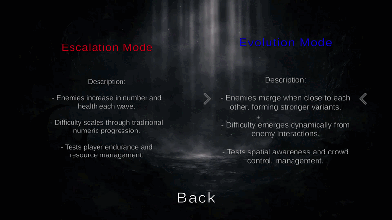

Convergence
Convergence is an experimental gameplay systems project developed in Unity that expands on the mechanics of Brawl Shooters. The project focuses on developing adaptive AI systems where enemies dynamically react to gameplay conditions and interact with each other during combat.

Project Overview
Traditional wave-based survival games often increase difficulty by spawning larger numbers of enemies. Convergence explores an alternative design approach where enemy behaviour evolves dynamically during gameplay.
Instead of simply increasing enemy quantity, enemies are able to interact with each other and merge into stronger variants. This creates emergent gameplay behaviour and allows enemy waves to evolve organically depending on how enemies move and cluster together.
Research Goal
This project investigates whether adaptive AI systems can improve gameplay challenge and performance efficiency in wave-based survival games.
Research Question: How can adaptive AI systems, such as enemy merging mechanics, improve gameplay challenge and performance efficiency in wave-based games?
Research Inspiration
The project draws inspiration from the AI Director system used in Left 4 Dead, where enemy spawning and pacing dynamically respond to gameplay conditions and player performance.
Rather than only adjusting enemy numbers, Convergence focuses on evolving enemy behaviour during gameplay through interactions between AI agents.
Game Modes

Escalation Mode
Description:
- Traditional wave-based gameplay where the player must survive increasingly difficult enemy waves
- Difficulty increases through enemy numbers, health scaling, and spawn rates
Evolution Mode
Description:
- Enemies dynamically merge when they are close to each other, forming stronger variants
- Stronger enemies have increased health and damage
- This introduces emergent gameplay behaviour where the structure of each wave evolves during combat
Core Gameplay Systems
- Adaptive AI behaviour system
- Enemy proximity detection
- Dynamic enemy merging mechanic
- Wave spawning and difficulty progression
- Player progression and combat systems
- AI performance optimisation
Adaptive Enemy System
Enemies are able to detect nearby enemies through proximity checks. When groups of enemies cluster together they can merge into a stronger variant with increased health, damage, and durability.
This creates emergent behaviour where enemy waves organically change composition during gameplay. A large group of small enemies may evolve into fewer but stronger enemies, forcing the player to adapt their combat strategy.
Performance Considerations
Wave-based survival games can become computationally expensive when large numbers of AI agents are active simultaneously. Traditional difficulty scaling methods often rely on spawning additional enemies, which can negatively impact performance.
The merging mechanic provides an alternative approach by reducing the total number of active AI agents while maintaining gameplay difficulty. Multiple enemies can combine into stronger variants, lowering the number of AI entities being processed while preserving challenge.
Technical Challenges
One of the primary challenges was ensuring that the merging mechanic remained readable and fair for the player. If enemies merged too frequently or unpredictably, the gameplay became chaotic and difficult to understand.
To solve this, merging behaviour is triggered based on controlled proximity conditions and cooldown logic. This prevents excessive merging events and ensures that enemy evolution remains predictable and understandable for the player.
Expected Outcomes
The project evaluates whether adaptive enemy systems can create more engaging gameplay experiences compared to traditional wave-based difficulty scaling.
The research findings will help inform how emergent AI behaviour and dynamic enemy systems can be implemented in future gameplay programming projects.